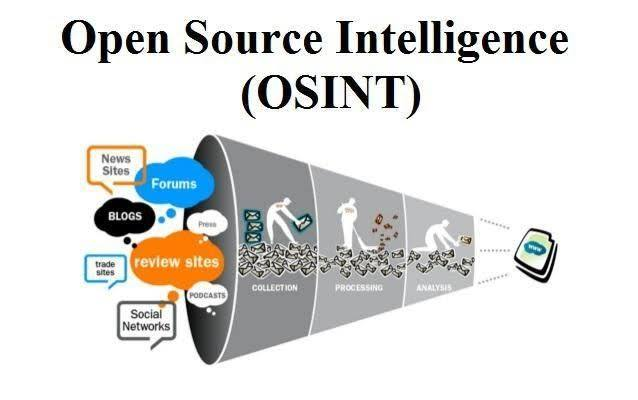
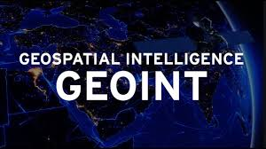

OSINT (Open Source Intelligence, "разведка по открытым источникам") — это методика сбора и анализа информации, полученной из общедоступных источников, таких как интернет-сайты, социальные сети, публичные базы данных, медиа и другие.
OSINT
CSINT
CSINT (Closed-Source Intelligence) — это сбор и анализ информации из закрытых источников, которые не являются публичными. Используются специализированные инструменты, такие как системы видеоанализа или ИИ.
HUMINT
HUMINT (Human Intelligence) — это разведка, основанная на информации, полученной от людей: через наблюдения, интервью, допросы или вербовку. Такой тип данных играет важную роль в работе спецслужб, военных, журналистов и аналитиков. В отличие от OSINT, HUMINT требует личного контакта и человеческого взаимодействия.
GeoINT
GeoINT (Geospatial Intelligence) — это разведка, основанная на анализе географической и визуальной информации: спутниковых снимков, карт, координат, изображений с геотегами, а также других пространственных данных. Этот тип данных позволяет определять местоположение объектов, отслеживать перемещения, анализировать инфраструктуру и оценивать обстановку в определённых районах. GeoINT активно применяется в военных и спасательных операциях, в OSINT-исследованиях, при мониторинге конфликтов и стихийных бедствий, а также в журналистике и расследованиях.
SOCMINT
SOCMINT (Social Media Intelligence) — это разведка, основанная на сборе, анализе и интерпретации информации из социальных сетей и онлайн-платформ, где пользователи создают и распространяют контент. Сюда входят такие платформы, как Twitter/X, Facebook, Instagram, TikTok, VK, Telegram, Reddit, YouTube, а также форумы, комментарии и блоги
Инструменты OSINT
Google Dorks
Google Dorks — это метод разведки, основанный на использовании расширенных поисковых операторов для извлечения информации, которая может быть скрыта от обычного поиска.
Maltego
Maltego — визуальный аналитический инструмент для сбора, корреляции и отображения информации из открытых и полузакрытых источников. Применяется в OSINT, киберразведке и digital forensics.
Shodan
Shodan — это поисковик, предназначенный для обнаружения устройств, подключённых к интернету: веб-камер, серверов, маршрутизаторов, IoT-устройств и других сервисов. В отличие от Google, Shodan ищет не сайты, а реальные устройства и их конфигурации. Часто используется в рамках OSINT- и киберразведки для оценки уязвимостей инфраструктуры.